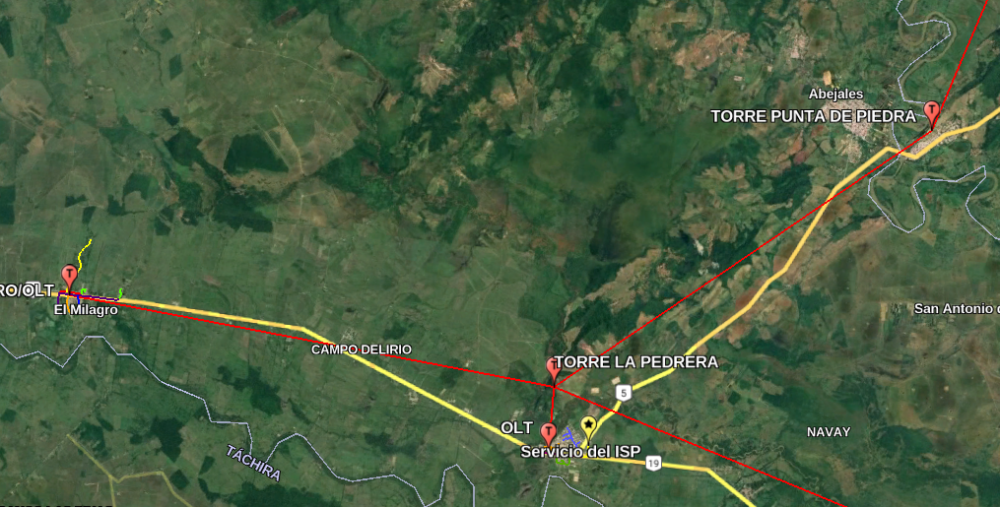
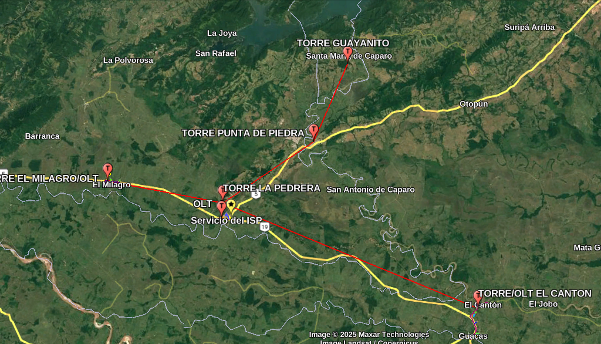

Plan Estratégico de Expansión: Conectando el Futuro
Interconexa Network se posiciona como el aliado estrategico clave para Digitel en la expansión de servicios de internet de alta calidad. Nuestra propuesta se centra en las zonas de La Pedrera, El Milagro y Abejales, donde una demanda insatisfecha y un mercado maduro esperan una conectividad superior. Solicitamos una capacidad inicial de 1 Gbps para estas nuevas áreas, la cual, sumada a nuestra base de 500 clientes existentes, impulsará un crecimiento sólido, sostenible y lleno de potencial. Estamos listos para demostrar cómo nuestra infraestructura, estrategia comercial y compromiso con la reinversión no solo impulsan una expansión ágil y rentable, sino que también fortalecen una alianza duradera y beneficiosa para ambas partes.
Dashboard de Oportunidad de Mercado: Un Terreno Fértil para la Conectividad
Hemos realizado un análisis profundo del mercado en La Pedrera, El Milagro y Abejales, identificando un potencial de crecimiento significativo y una clara necesidad de un servicio de internet superior.
Mercado Potencial Identificado
4,500+
Hogares y locales comerciales listos para ser conectados. La Pedrera, impulsada por la Troncal 5, muestra un crecimiento comercial constante.
Propuesta de Valor Disruptiva
$20
Plan de 100 Mbps con una garantía de 2 Mbps base y un sistema de QoS avanzado, ofreciendo más valor a un precio competitivo.
Ventaja Competitiva Sólida
Capitalizamos la insatisfacción con el servicio postventa deficiente del competidor
Nuestras oficinas locales garantizan tiempos de respuesta rápidos y una atención al cliente superior.
Penetración Proyectada Agresiva
60%
Tasa de penetración estimada en el primer año, impulsada por instalación y primer mes gratis, y equipos en comodato.
Infraestructura Técnica: Robustez y Escalabilidad Sin Precedentes
Nuestra infraestructura ha sido diseñada con una visión a largo plazo, garantizando no solo la calidad del servicio actual, sino también una capacidad de crecimiento masivo y sin interrupciones.
Diseño de Red Híbrida: Cobertura Óptima y Eficiencia
La columna vertebral de nuestra red es una combinación estratégica de Fibra Óptica GPON para las áreas de mayor densidad poblacional y Radioenlace de alta capacidad para cubrir eficientemente zonas rurales, aldeas y estancias campestres. Esta versatilidad tecnológica nos permite una cobertura amplia y optimizada, llegando a donde otros proveedores no llegan. Nuestro nodo central en La Pedrera está estratégicamente ubicado cerca del backbone de Digitel, lo que minimiza la latencia y facilita una interconexión facil, ágil y eficiente. La conexión por radioenlace operará en modo bridge para asegurar un procesamiento mínimo del tráfico y una máxima eficiencia.
Fibra GPON (Urbano)
Radioenlace (Rural)
Utilizamos splitters 1:8 y 1:16 en nuestra red GPON para garantizar una distribución eficiente de la señal y una calidad de servicio uniforme a cada suscriptor. Nuestra visión a mediano y largo plazo es la convergencia total a fibra óptica pura en todas las zonas, consolidando aún más la estabilidad y el rendimiento.
Capacidad de OLTs: Duplicando la Conexión de Clientes al Instante
Un pilar fundamental de nuestra estrategia de crecimiento es la capacidad intrínseca de nuestras OLTs (Optical Line Terminals). Nuestras OLTs en cada población a abordar están dispuestas para un crecimiento exponencial. Cada OLT dispone de 8 puertos PON, que son los puntos de conexión física para la fibra óptica que llega a los clientes finales. Actualmente, de esos 8 puertos, solo 4 están en uso. Esto nos confiere un margen de crecimiento del 100% con el hardware de cabecera existente. En términos prácticos, esto significa que podemos duplicar nuestra capacidad de conexión de clientes por cada OLT sin necesidad de adquirir nuevo equipo principal. Esta disponibilidad de puertos no utilizados nos permite una expansión fluida, eficiente y extremadamente rápida a medida que la demanda crece en cada una de las zonas, minimizando los tiempos de despliegue y maximizando la rentabilidad de la inversión inicial. Estamos preparados para una rápida escalabilidad.
Estado Actual de Puertos PON por OLT
Puerto 1
Puerto 2
Puerto 3
Puerto 4
Puerto 5
Puerto 6
Puerto 7
Puerto 8
4 Puertos PON adicionales disponibles por cada OLT, listos para conectar nuevos clientes de inmediato. Esto representa una ventaja significativa en la velocidad de despliegue y la eficiencia de la inversión.
Mapa de Expansión Geográfica: Visualizando Nuestro Alcance
Para una comprensión clara de nuestro plan de despliegue, presentamos un mapa visual de las zonas que abordaremos inicialmente y nuestra proyección de expansión a futuro. Estas imágenes ilustran la ubicación estratégica de nuestros nodos y la extensión de nuestra red.
Fase 1: Zonas de Lanzamiento Inicial
La Pedrera, El Milagro y Abejales" class="rounded-lg shadow-md w-full h-auto max-w-full">Mapa detallado de La Pedrera, El Milagro y Abejales, mostrando la ubicación de las OLTs y las torres.
Fase 2: Proyección de Expansión Regional
Mapa de nuestra visión de expansión a El Cantón, Guacas, Punta de Piedra y Guallanito, utilizando radioenlaces estratégicos.
Proyecciones Financieras: Rentabilidad y Crecimiento Sostenible
Nuestra estrategia financiera se basa en un modelo de negocio robusto que garantiza la rentabilidad y un crecimiento sostenido, con un enfoque claro en la reinversión para la mejora continua de la red y el servicio.
1. Inversión Inicial (CAPEX) Optimizada
Gracias a nuestra infraestructura existente y un eficiente modelo de equipos en comodato, hemos optimizado significativamente el costo total estimado del despliegue de la red, que incluye fibra, equipos de cabecera y de cliente, y mano de obra. Esta gestión inteligente del CAPEX maximiza nuestro retorno de la inversión y acelera el tiempo de despliegue.
2. Costos Operativos (OPEX) Eficientes
Nuestros costos fijos mensuales (nómina, alquiler, electricidad, mantenimiento de la red, sin incluir la inversión en servicios de Digitel) han sido cuidadosamente ajustados, reflejando una estructura operativa excepcionalmente eficiente y de bajo coste. Esta optimización nos permite maximizar la rentabilidad interna y destinar un volumen significativo de recursos directamente al crecimiento y la expansión, asegurando siempre una calidad de servicio superior sin incurrir en gastos superfluos.
3. Punto de Equilibrio Acelerado
Hemos calculado un punto de equilibrio que nos permitirá alcanzar la rentabilidad en un mediano plazo. Nuestra agresiva estrategia de penetración de mercado, combinada con un modelo de negocio rentable y la capacidad de reinversión constante, nos impulsará a generar excedentes rápidamente. Esto no solo asegura nuestra solidez financiera, sino que también garantiza el pago puntual y creciente por la capacidad contratada con Digitel.
4. Colaboración Estratégica y Tarifas Atractivas: Fomentando un Crecimiento Compartido y Sostenible.
Considerando la intensa y creciente competitividad del mercado de conectividad actual, y las diversas ofertas de capacidad que ya hemos evaluado, valoramos profundamente que Digitel nos haya abierto sus puertas con una confianza genuina en nuestra empresa y en este ambicioso proyecto de desarrollo. Buscamos en Digitel no solo un proveedor, sino un verdadero aliado comercial estratégico, y deseamos contar activamente con su respaldo en cada paso de este emocionante camino.
Es fundamental que la tarifa por capacidad que nos ofrezcan sea altamente competitiva y se alinee con las realidades del mercado, ya que este factor es determinante para nuestra capacidad de ofrecer planes disruptivos y atractivos que aceleren exponencialmente la adquisición de clientes.
Una estructura de precios que reconozca la dinámica actual del mercado no solo fortalecerá nuestra propuesta de valor al cliente final, sino que, de manera crucial, nos permitirá impulsar un volumen de ancho de banda contratado con ustedes mucho más rápido y significativo. Este enfoque colaborativo es esencial para maximizar nuestro impacto en el mercado y satisfacer las necesidades de nuestros usuarios de manera efectiva.
En definitiva, al consolidarnos como un aliado de alto volumen y alta eficiencia, esta sinergia facilitará un crecimiento de ingresos acelerado y robusto para Digitel, garantizando una alianza comercial sólida y mutuamente enriquecedora. Juntos, podremos construir una vida comercial próspera y sostenible en el corto, mediano y largo plazo, creando valor significativo para ambas empresas.
Cronograma de Ejecución: Despliegue Ágil y Eficiente
Nuestro plan de ejecución está diseñado para un despliegue rápido y metódico, asegurando la operatividad en el menor tiempo posible y la expansión continua.
1
Fase 1: Despliegue de la Red Troncal de Fibra (¡Completada!)
Esta fase ya está cubierta y operativa. Contamos con una troncal de fibra desplegada en las zonas a cubrir, lo que reduce drásticamente el tiempo y la inversión inicial requerida. Además, la semana entrante se está introduciendo el proyecto de ampliación de zona de explotación ante CONATEL, demostrando nuestro avance regulatorio y proactividad.
2
Fase 2: Instalación de OLT, NAP y Pruebas de Red (¡Muy Avanzada!)
Esta fase también está muy avanzada. Actualmente, tenemos la capacidad para alimentar y mejorar el servicio de nuestros 500 clientes existentes. Para la interconexión con Digitel, nuestra central está estratégicamente ubicada a solo 800 metros de su estación backbone en La Pedrera. Nosotros podemos realizar el trabajo de instalación de esta fibra troncal, dejando el cable listo para la conexión final por parte de Digitel, o si nos lo permiten, completar todo el trabajo, ya que contamos con todas las herramientas necesarias (fusionadoras, OTDR, etc.). Esto minimiza significativamente la inversión y el esfuerzo por parte de Digitel, acelerando la puesta en marcha de la interconexión.
3
Fase 3: Inicio de Campaña de Marketing e Instalaciones a Clientes (¡Próxima Implementación!)
Una vez establecida la interconexión activa con Digitel y la capacidad para proveer y mejorar el servicio a nuestros clientes, lanzaremos una campaña de marketing intensiva. Nuestro objetivo es crecer rápidamente en la zona, capitalizando la demanda existente y nuestra ventaja competitiva en servicio al cliente. La velocidad de despliegue es clave, y estamos preparados para una rápida adopción.
Proyección de Crecimiento Interactivo (Año 1): Demanda de Capacidad en Tiempo Real
Esta sección ilustra nuestra proyección de crecimiento de clientes y la demanda de ancho de banda mes a mes. El deslizador le permite visualizar cómo el aumento en nuestra base de clientes se traduce directamente en la necesidad de escalar la capacidad de internet, justificando nuestras solicitudes de ancho de banda y demostrando la rapidez de nuestra expansión.
Mes
1
Nuevos Clientes
50
Clientes Totales
550
Ancho de Banda (Mbps)
1,100
Utilización
100%
La proyección muestra cómo la capacidad inicial de 1 Gbps será utilizada rápidamente por nuestra base de 500 clientes existentes y los nuevos suscriptores. Esto subraya la necesidad crítica de aumentos de capacidad graduales, que serán el resultado directo de nuestra estrategia de reinversión en equipos de última generación (Wi-Fi 5 y 6) para soportar el acceso de 100 Mbps con una garantía de 2 Mbps. Un precio competitivo por parte de Digitel es vital para mantener este ciclo virtuoso de crecimiento y reinversión.
Proyección Detallada de Crecimiento y Demanda de Capacidad (Año 1)
Esta tabla presenta un desglose mes a mes de nuestras proyecciones de nuevos usuarios, y la totalidad de ellos, demanda de ancho de banda, capacidad contratada, puntos de referencia o momentos significativos en el tiempo que marcan el progreso y la consecución de objetivos específicos dentro de la proyección de usuarios y capacidad, Ofreciendo una visión clara y concisa de la evolución de nuestra operación y la justificación de nuestras necesidades en capacidad.
| Trimestre | Mes | Nuevos Clientes (Meta) | Clientes Totales (Acumulado) | Ancho de Banda Requerido (Mbps) | Capacidad Contratada (Mbps) | Utilización de Capacidad | Hito Clave |
|---|---|---|---|---|---|---|---|
| Pre-T1 | - | - | 500 (Base Existente) | 1,000 | 1,000 | 100% | Base Operacional |
| T1 | 1 | 50 | 550 | 1,100 | 1,100 | 100% | Lanzamiento Nueva Zona |
| 2 | 70 | 620 | 1,240 | 1,250 | 99.2% | Solicitud Aumento Capacidad (+150 Mbps) | |
| 3 | 90 | 710 | 1,420 | 1,500 | 94.7% | Solicitud Aumento Capacidad (+250 Mbps) | |
| T2 | 4 | 110 | 820 | 1,640 | 1,750 | 93.7% | Solicitud Aumento Capacidad (+250 Mbps) |
| 5 | 130 | 950 | 1,900 | 2,000 | 95% | Activación 2do Gbps (Total 2000 Mbps) | |
| 6 | 150 | 1,100 | 2,200 | 2,300 | 95.6% | Solicitud Aumento Capacidad (+300 Mbps) | |
| T3 | 7 | 170 | 1,270 | 2,540 | 2,750 | 92.3% | Solicitud Aumento Capacidad (+450 Mbps) |
| 8 | 180 | 1,450 | 2,900 | 3,150 | 92% | Activación 3er Gbps (Total 3000 Mbps) | |
| 9 | 200 | 1,650 | 3,300 | 3,500 | 94.2% | Solicitud Aumento Capacidad (+350 Mbps) | |
| T4 | 10 | 200 | 1,850 | 3,700 | 4,000 | 92.5% | Solicitud Aumento Capacidad (+500 Mbps) |
| 11 | 200 | 2,050 | 4,100 | 4,500 | 91.1% | Activación 4to Gbps (Total 4000 Mbps) | |
| 12 | 150 | 2,200 | 4,400 | 4,800 | 91.6% | Solicitud Aumento Capacidad (+300 Mbps) |
Visión a Futuro: Expansión Regional Estratégica
Nuestra visión de crecimiento va más allá de las áreas iniciales. Hemos identificado zonas adicionales con un alto potencial que son estratégicamente idóneas para su incorporación ágil en nuestro proyecto de ampliación de cobertura. Esta expansión planificada no solo actúa como una hoja de ruta clara para el desarrollo de la red de Digitel, sino que también les permitirá acceder a nuevos mercados de manera indirecta y eficiente. A través de esta propuesta, estamos comprometidos a crear oportunidades que fortalezcan nuestra presencia conjunta y generen un impacto positivo en la comunidad, asegurando un futuro próspero y sostenible para ambas partes.
Estas poblaciones, por su proximidad a La Pedrera y entre sí, son clave para una expansión eficiente y rentable, asegurando una cobertura integral y un crecimiento sostenido para Interconexa Network en la región.